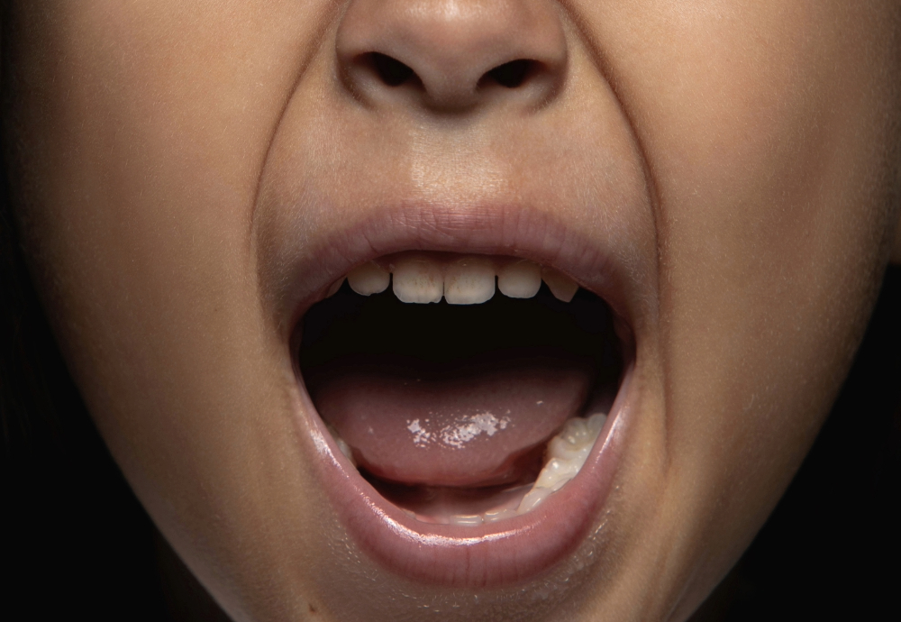

때는 7살 때… 감기에 걸렸다. 뭐 감기야 누구나 걸리는 거니까 대수롭지 않게 여겼다. 하지만 코가 꽉 막혀서 숨 쉬는 것도 힘들었고, 엄마는 "코 세게 풀면 뻥 뚫릴 거야!"라고 했다. 그래서 나는 믿고 힘껏 코를 풀었다.
"팽…!!!!!"

그 순간,
왼쪽 귀가 사라졌다.
나는 기억력이 좋지 않다. 최근 일도 종종 까먹는 건 물론이고 어릴 적 일화는 대부분 생각이 나지 않는다. 그런 내가 아직까지 선명하게 기억하는 딱 한 가지 일화가 있다. 이 일은 가족 사이에서도 간간히 오고가는 이야기이다. 하지만 워낙 어렸을 때의 일이니 조금의 각색은 어쩔 수 없다.
때는 7살 때… 감기에 걸렸다. 뭐 감기야 누구나 걸리는 거니까 대수롭지 않게 여겼다. 하지만 코가 꽉 막혀서 숨 쉬는 것도 힘들었고, 엄마는 "코 세게 풀면 뻥 뚫릴 거야!"라고 했다. 그래서 나는 믿고 힘껏 코를 풀었다.
"팽…!!!!!"
그 순간,
왼쪽 귀가 사라졌다.
아니 진짜로 어디로 간 건 아니지만, 소리가 반만 들리기 시작한 거다. 순간 당황해서 오른쪽 귀를 손으로 막아봤다. 오른쪽 귀는 평소 같았지만 왼쪽 귀는… 마치 혼자만 딴 세상으로 떠난 듯한 느낌이었다.
"나 귀 없어졌어!!!"
내 비명에 엄마가 부리나케 달려왔다.
"뭐? 귀가 없어졌다고??"
"아니 그러니까… 소리가 없어졌어!!! 한쪽만 들려!!"
엄마는 피식 웃으면서 "아휴, 코 너무 세게 풀어서 그래~ 곧 돌아올 거야"라고 했다.
하지만 나는 진지했다. 이건 엄청난 사건이었다.
세상이 반쪽이 됐다.
그래서 나는 소리를 되찾기 위해 다양한 방법을 시도해보기로 했다.
나는 귀가 다시 제자리로 돌아오길 바라며 내가 마치 전동 드라이버가 된 것처럼 필사적으로 머리를 흔들었다. 좌우로, 위아래로, 심지어 빙글빙글까지. 하지만 아무 소용이 없었다. 어지럽기만 하고 귓가에선 윙윙거리는 소리까지 들려왔다. 이러다 뇌까지 흔들리겠다며 결국 포기했다.
뭔가 안에서 꽉 막힌 느낌이 들어서 뚫어보겠다는 심정으로 폴짝폴짝 뛰기 시작했다. 가볍게 뛰어보다가, 더 높이, 더 세게. 팔까지 휘저으며 점프하는 내 모습이 어쩐지 우스꽝스러웠겠지만, 일단은 간절했다. 숨만 차고 다리는 후들거리고, 변한 건 아무것도 없었다.
절대
따라하지 마세요.
일단 무서우니 살살 잡아당겨보자. 택도 없다. 그렇다면.. 점점 조금씩 힘을 더 줘보자. 양손으로 귓볼을 잡고 쭈욱 잡아당겼다. 그저 얼얼한 통증만 남을 뿐. 귀를 잡아당겨서 귓구멍이 넓어지면 뭔가 잘 들릴 것 같은 느낌은 역시나 그냥 느낌일 뿐이었던 거다. 이거 설마 평생 이대로 살아야 하나 불길한 생각이 스멀스멀 올라왔다.
당시 내가 제일 좋아하던 MP3를 꺼냈다. 그냥 소리를 크게 해서 들리게끔 만들면 되지 않을까? 라는 어설픈 생각으로 볼륨을 크게 맞춘 후 이어폰을 귀에 꽂았다. 이어폰 속에서 울려 퍼지는 음악은 마치 내 귀를 터뜨릴 것처럼 시끄러웠다. 그래도 이게 다 귀를 뚫기 위한 방법이라는 생각으로 더 크게, 더 크게 최대 볼륨까지 가니 그냥 귀는 더 아파왔고 이제 머리까지 띵했다.
급기야 세면대를 찾았다. 물을 콸콸 틀고 그대로 잠수했다. 그냥 그렇게 하면 괜찮아질 것 같았다. 보글보글보글… 한참 동안 물속에 머리를 담그고 있자, 귀는 물론 머리까지 꽉 막힌 느낌이었다. 잠수에는 한 일가견 있었지만 세면대에서 이런 짓을 하고 있을 줄은 몰랐다. 물속에서 고요히 머리를 담그고 있으니, 귀 속에서 윙윙거리는 소리가 더 크게 들리는 듯했다. 그리고 숨 참는 데에도 한계가 왔다.
푸!!!!!!
당연하게도 여전히 귀는 막혀 있었고, 물이 세면대 밖으로 흘러넘쳐 바닥이 다 젖어버렸다.
모든 방법을 동원했지만 실패한 후 절망하고 있던 그때, 엄마가 말했다.
"입 크게 벌리고 하품해봐!"
때마침 졸리기도 했다. 나는 속는 셈 치고 하품을 시도했다. 최대한 크게.
(하품 사진을 계속 찾다보니 하품이 끊임없이 나온다.)
그리고, 기적이 일어났다.
귀가 돌아왔다.
그렇게 나는 결심했다.
앞으로 코 안 풀어야지…
모두들 귀 조심하세요.